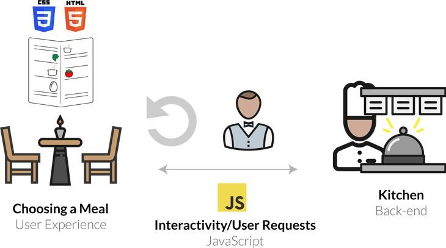
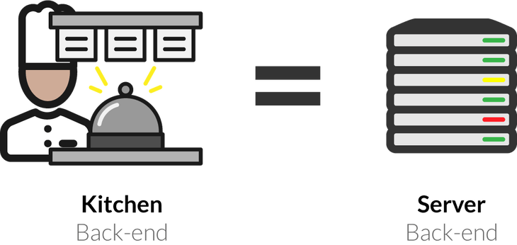
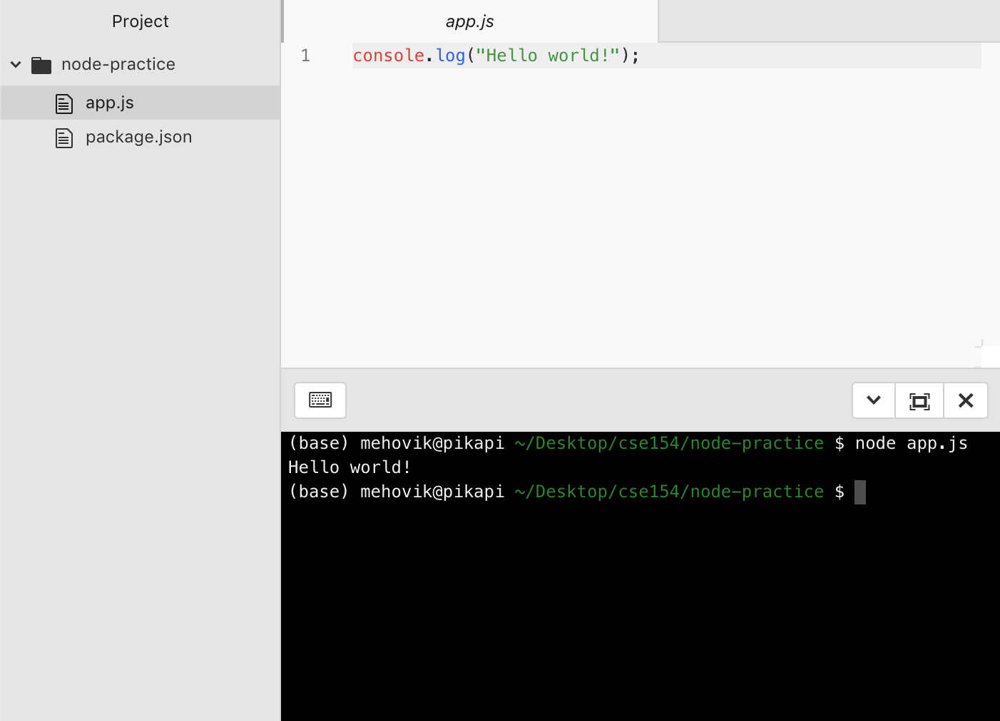

CS11 - JavaScript
Intro to Node.js, More Asynchronous Programming
XKCD 869Review: Web Services
Web service: software functionality that can be invoked through the internet using common protocols
It's like a remote function(s) you can call. Done by contacting a program on a web server
- Web services can be written in a variety of languages
- Many web services accept parameters and produce results
- Clients contact the server through the browser using XML over HTTP and/or AJAX Fetch code
- The service's output might be HTML but could be text, XML, JSON, or other content
So How Does a Web Service Respond to Requests?
URLs and Web Servers
https://server/path/fileUsually when you type a URL in your browser:
- Your computer looks up the server's IP address using DNS
- Your browser connects to that IP address and requests the given file
- The web server software (e.g. Apache) grabs that file from the server's local file system and then send back its contents to you
Why Do We Need a Server to Handle Web Service Requests?
Servers are dedicated computers for processing data efficiently and delegating requests sent from many clients (often at once).
These tasks are not possible (or appropriate) in the client's browser.
Languages for Server-Side Programming
Server-side programs are written using programming languages/frameworks such as PHP, Java/JSP, Ruby on Rails, ASP.NET, Python, Perl, and JS (Node.js)
Web servers contain software to run those programs and send back their output.
Server-Side JavaScript: Node.js

- Open-source with an active developer community
- Flourishing package ecosystem
- Designed for efficient, asynchronous server-side programming
What is Client-Side JS?
So far, we have used JS on the browser (client) to add interactivity to our web pages
"Under the hood", your browser requests the JS (and other files) from a URL resource, loads the text file of the JS, and interprets it realtime in order to define how the web page behaves.
In Chrome, it does this using the V8 JavaScript engine, which is an open-source JS interpreter made by Google. Other browsers have different JS engines (e.g. Firefox uses SpiderMonkey).
Besides the standard JS language features, you also have access to the DOM when running JS on the browser - this includes the window and document
Client vs. Server-side JS

Node.js: Server-side JS
Node.js uses the same open-source V8 JavaScript engine as Chrome
Node.js is a runtime environment for running JS programs using the same core language features, but outside of the browser.
When using Node, you do not have access to the browser objects/functions (e.g. document, window, addEventListener).
Instead, you have access to functionality for managing HTTP requests, file i/o, and database interaction.
This functionality is key to building REST APIs!
Getting started with Node.js
When you have Node installed (last week's section), you can run it immediately in the command line.
- Start an interactive REPL with
node(no arguments). This REPL is much like the Chrome browser's JS console tab. - Execute a JS program in the current directory with
node file.js
Starting a Node.js Project
There are a few steps to starting a Node.js application, but luckily most projects will follow the same structure.
When using Node.js, you will mostly be using the command line (e.g. from a terminal you may have installed on VisualStudio for Python from CS 1).
- Start a new project directory (e.g.
node-practice) - Inside the directory, run
npm initto initialize apackage.jsonconfiguration file (you can keep pressing Enter to use defaults) - Install any modules with
npm install <package-name> - Write your Node.js file! (e.g.
app.js) - Include any front-end files in a
publicdirectory within the project.
Along the way, a tool called npm will help install and manage packages that are useful in your Node app.
Starting a Node.js Project
Running npm init to create package.json
Starting a Node.js Project
Running npm init to create package.json
Starting app.js
You can write and execute JS using Node in the command line
Node.js Modules
When you run a .js file using Node.js, you have access to default functions in JS (e.g. console.log)
In order to get functionality like file i/o or handling network requests, you
need to import that functionality from modules - this is similar to the import keyword you have used in Java or Python.
In Node.js, you do this by using the require() function, passing the string name of the module you want to import.
For example, the built-in module to provide HTTP request/response functionality in Node.js is called http. You can import it like this:
const http = require("http");JS
Quick Note on const Keyword
Using const to declare a variable inside of JS just means that you can never change what that variable references. We've used this to represent "program constants" indicated by ALL_UPPERCASE naming conventions
For example, the following code would not work:
const specialNumber = 1;
specialNumber = 2; // TypeError: Assignment to constant variable.JS
When we store modules in Node programs, it is conventional to use const instead of let to avoid accidentally overwriting the module.
Unlike the program constants we define with const (e.g. BASE_URL), we use camelCase naming instead of ALL_CAPS.
npm: Node Package Manager
Node comes with built-in "core modules" you can require in your project without extra installation (http, fs, path, etc.)
But one of the appealing features of Node as a server-side technology is the extensive ecosystem of modules like Express to accomplish different tasks
npm (Node Package Manager), gives us an easy way to download, manage, and update all of these packages.
Installing Packages
Node packages can be installed in two different ways, globally or locally.
Global packages are installed by adding a -g flag in the npm install command and are accessible anywhere on your computer.
npm install -g <package_name>command line
This is useful if a package contains terminal commands that you want to be used at any time, such as the programs you installed last week (nodemon and ndb).
Local Packages
It's best practice to use local installation for project-specific packages.
For example, if you want to build a RESTful APIs in Node, Express is a common module web developers will use.
Each time we would create a project to use the Express module, we would run the following within the project directory:
npm install expressnpm will automatically add a dependency to the project's package.json
Package Management
In addition to installing modules, npm will also automatically manage packages in your Node projects.
Whenever you install a package, npm will add it to package.json and a node_modules folder
These files should not be distributed with the rest of your project code (e.g. front-end files and app.js - node_modules can get very large
Instead of sending this node_modules folder containing modules that already exist online, you send them an information file called package.json that NPM uses to keep track of all of these packages.
When a user downloads your project and its package.json file, they just run npm install within the project directory, and npm will install all of those packages required to run the project.
npm's package.json
The package.json file is created by running npm init which will prompt the user to answer a few questions about the project like the name and version.
Any future npm install <package_name> commands that are run in the same project will be automatically added to this package.json file.
A package-lock.json file will also be created, containing a more detailed version of all of the packages used in a project and their dependencies.
Summary: Starting a Node.js Project
There are a few steps to starting a Node.js application, but luckily most projects will follow the same structure.
When using Node.js, you will mostly be using the command line.
- Start a new project directory (e.g.
node-practice) - Inside the directory, run
npm initto initialize apackage.jsonconfiguration file (you can keep pressing Enter to use defaults) - Install any modules with
npm install <package-name> - Write your Node.js file! (e.g.
app.js)
Along the way, a tool called npm will help install and manage packages that are useful in your Node app.
Package Management
We use npm (Node Package Manager) to install and manage packages (many of which are modules)
A package is any project with a package.json file
- To create your own package, use
npm init - To install module dependencies in an existing project containing a
package.json, usenpm install - Each time you run
npm install <module-name>, npm will automatically add the module as a dependency to the currentpackage.jsonand add the module tonode_modules
When sharing your project, you provide package.json but not node_modules
File I/O in Node.js
Unlike the browser, we have access to the file system when running Node.js
We can read all kinds of files, as well as write new files
Next week, we will learn how to process directories as well
The fs Core Module
A useful Core Module we get in Node is fs (file system)
There are many functions in the fs module (with excellent documentation)
By default, all functions are asynchronous
There are synchronous versions for many, but you should not use them, as they block the main thread
Most functions rely on the Node.js idiom of error-first callbacks
You do not need to install core modules like fs using npm
Reading Files
fs.readFile(fileName, encodingType, callback)
fileName(string) file nameencodingTypefile encoding (usually "utf8")callback"error-first" function that takes two arguments: an Error object (undefined if no error) and the result file contents (e.g. string text)
fs.readFile("example.txt", "utf8", (err, result) => {
if (err) {
console.error("Something went wrong when reading the file...");
} else {
let lines = result.split("\n");
console.log("First line contents: " + lines[0]);
}
});JS
Example code: file-reading.js
Reading and Parsing JSON
You can read any file, including JSON. To parse JSON file contents and use as a JS object, use JSON.parse (works similarly to .json() you've used in fetch).
// Example reading/parsing JSON
fs.readFile("package.json", "utf8", (err, result) => {
if (err) {
console.error(err);
} else {
let data = JSON.parse(result);
console.log(data);
}
});JS
Writing Files
To write a file, use the fs.writeFile(fileName, data, callback) function.
This function's callback is also error-first, but only takes an error argument
fs.writeFile("new-file.txt", "Hello!", (err) => {
if (err) {
console.error("Something went wrong when writing the file...");
} else {
console.log("new-file.txt written to successfully!");
}
});JS
Example code: file-writing.js
Appending to Files
fs.writeFile will always overwrite an existing file
If you want to append to a file, you can use fs.appendFile
fs.appendFile("example.txt", "Another line\n", (err) => {
if (err) {
console.error("Something went wrong when writing the file...");
} else {
console.log("example.txt appended to successfully!");
}
});JS
Example code: file-appending.js
Reading Directories
fs.readdir returns an array of files (including directory names) within a given directory path
We will learn about another way to process directories (glob) on Wednesday
fs.readdir("data", (err, contents) => {
if (err) {
console.error(err);
} else {
console.log("data directory contents: ");
console.log(contents);
}
});JS
Example code: directory-reading.js
Asynchronous Programming
One of the advantages of Node.js is its efficiency to handle asynchronous code with a single thread
Common asynchronous functions:
- setTimeout and setInterval
- Network requests
- File I/O
- Database connections
However, this can make it difficult to write code with asynchronous functions that are dependent on another asynchronous function
Handling Asynchronous Code in fs
Most fs functions are asynchronous, including readFile and writeFile
This means that we have to be careful when relying on file i/o functions finishing before moving on to subsequent statements in a program
We've seen asynchronous programming already with setTimeout/setInterval
From Callbacks to Promises to async/await
We've seen callbacks and Promises as ways to package uncertain (asynchronous) behavior
More recently (2017), async/await keywords have been added to JS to make asynchronous code feel synchronous, while still getting the efficiency benefits
Using async and await
The async keyword will label a function as having asynchronous code
To use, simply use the async keyword before the function declaration
// In named functions:
async function fnName() { ... }
// Arrow functions:
async () => { ... }
// Anonymous functions
async function() { ... }JS
The async function’s return value will be wrapped in a Promise
A Simple Example
function sayHello(name) {
return "Hello " + name;
}
console.log(sayHello("dubs")); // Hello dubs
async function sayHelloAsync(name) {
return "Hello " + name;
}
sayHelloAsync("dubs"); // Promise <pending>
sayHelloAsync("dubs").then(console.log); // Hello dubsJS
In this example, we can see how async wraps a function into one that returns a Promise that resolves to the returned value
Just like other Promises, we can use .then to extract the resolved value
await with async
Within an async function, we can now use await on asynchronous function calls
On each line with await, the JS engine will wait for the function to finish until continuing
The result of the awaited function call will be the resolved value
Chaining Delayed Promises with .then vs. await
function doubleAfter1s(n) {
return new Promise((resolve, reject) => {
setTimeout(() => { resolve(n * 2); }, 1000);
});
}
// standard .then solution
doubleAfter1s(2) // 4
.then(doubleAfter1s) // 8
.then(doubleAfter1s) // 16
.then(result => console.log(result)); // 16 (after seconds)
// equivalent async/await solution (as anonymous function call)
(async () => {
let a = await doubleAfter1s(2); // 4
let b = await doubleAfter1s(a); // 8
let c = await doubleAfter1s(b); // 16
console.log(c); // 16 (after 3 seconds)
})();JS
Error-handling with async/await
For error-handling with async/await, use try/catch instead of .then/.catch
The catch statement will catch any errors that occur in the then block (whether it’s in a Promise or a syntax error in the function), similar to the .catch in a fetch promise chain
If you don’t have try/catch in the async function but an error occurs, the generated Promise will be rejected
async/await Example with try/catch
function doubleAfter1sUnless4(n) {
return new Promise((resolve, reject) => {
setTimeout(() => {
if (n === 4) {
reject("Rejected!");
} else {
resolve(n * 2);
}
}, 1000);
});
}
async function delayDoubles() {
try {
let a = await doubleAfter1sUnless4(2); // 4
let b = await doubleAfter1sUnless4(a); // error!
let c = await doubleAfter1sUnless4(b); // unreached
} catch (err) {
console.error(err); // "Rejected!"
}
}
delayDoubles(); // Rejected! (after 2 seconds)JS
So are Callbacks and Promises "Bad"?
The challenge is managing asynchronous code with dependencies, leading to the nested callback pyramid structure
We've seen Promises as a way to capture asynchronous code, and remove the callback nesting cleanly with a .then/.catch pipeline
The challenge with Promises is having to create "promisifying" functions to capture asynchronous code. This isn't bad, but it is challenging to learn at first, and there’s a lot of shared code between creating a Promise-returning function
async is just "syntactic sugar" to working with Promises
What else do we know that returns a Promise?
fetch also returns a Promise! So yes, this means we can use async
to handle fetch requests in client-side JS
async function makeRequest() {
let response = await fetch(url);
if (!response.ok) {
throw Error("Request error: " + response.statusText);
}
let data = await response.json();
// let data = await response.text();
// etc.
}JS
Using async/await in our APOD Example
Running demo (see console and Network tab through example functions)
apod.js source code with all 5 examples
function requestAPOD(date) {
let url = URL + "&date=" + date;
fetch(url)
.then(checkStatus)
.then(resp => resp.json())
.then(processApodJson)
.catch(handleRequestError);
}
JS (normal fetch Promise chain version)
async function requestAPODAsync(date) {
let url = URL + "&date=" + date;
try {
let resp = await fetch(url);
resp = checkStatus(resp);
let data = await resp.json();
processApodJson(data);
} catch (err) {
handleRequestError(err);
}
}JS (new async/await version)
The async/await solution on the right looks longer, but what if we have dependent fetch calls? What if we want to fetch 5 days in a row?
Making Multiple Requests with .then/.catch
Suppose we had a function fetchOneDay that takes a date string and fetches from the APOD
service, returning a Promise that resolves to the result JSON (see source code).
We want to log the results for 5 days in a row. The following example uses .then/.catch to make 5 simultaneous requests, but we don't guarantee the order of the console.log statements
function multiFetchRequest() {
let date = "2019-08-0";
let results = [];
for (let i = 1; i <= 5; i++) {
fetchOneDay(date + i)
.then(console.log)
.catch(handleRequestError);
}
}JS (then/catch version)
Making Multiple Requests with async/await
This next example uses await in an async function to wait for each fetch call to finish, allowing us
to guarantee the order of the logged results.
However, we lose the asynchronous efficiency, as each fetch request isn't started until the previous is resolved.
async function multiAsyncRequest() {
let date = "2019-08-0";
for (let i = 1; i <= 5; i++) {
try {
let data = await fetchOneDay(date + i);
console.log("async/await request returned for " + data["date"]);
} catch (err) {
handleRequestError(err);
}
}
}JS (async/await version)
We can improve this with Promise.all, which returns a Promise resolving to an array of Promise results
Parallelizing Requests
This final version uses Promise.all to make 5 simultaneous fetch calls, collect them in order, and output them
only when all have finished executing
async function multiRequestParallel() {
let promises = [];
let date = "2019-08-0";
for (let i = 1; i <= 5; i++) {
let apodPromise = fetchOneDay(date + i);
promises.push(apodPromise);
}
let results = await Promise.all(promises);
for (let i = 0; i < results.length; i++) {
let data = results[i];
console.log("Promise.all requests returned for " + data["date"]);
}
}JS
We could also use Promise.all without await (it just takes an array of Promises), but this example motivates a solution that is much cleaner with async/await
Common Pitfalls when using async/await
1. Using await outside of an async function
- This will cause a Syntax Error -
awaitis a keyword that is only allowed in a function labeled asasync
2. Not using await on an async function
-
Remember that any function labeled as
asyncnow returns a Promise - in order to get a resolved value, you need to useawait(or.then)
Using async/await with File I/O
There are a few ways we can use async/await with fs, but the key thing is we need to use await on functions that return Promises
As mentioned earlier, fs functions like readFile and writeFile are asynchronous by default but do not return Promises
We could make our own Promise-returning functions, but that can be tedious.
Instead, we'll need to "promisify" these functions so we can use async and await
We'll learn how with a useful utils function in tomorrow's section!
Summary
async/await is just "syntactic sugar" to make asynchronous programming feel synchronous
Many Node.js functions are asynchronous, and we can use async/await to simplify callback pyramids
Be careful about the common pitfalls with await!